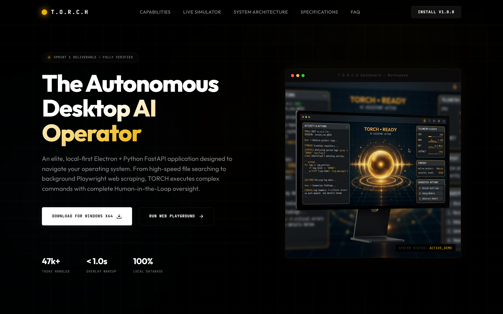

An elite, local-first Electron + Python FastAPI application designed to navigate your operating system. From high-speed file searching to background Playwright web scraping, TORCH executes complex commands with complete Human-in-the-Loop oversight.

TORCH bridges the gap between deep large language models and native operating system interfaces, executing safely in a sandboxed, controllable environment.
Wake-word activated frameless circular voice overlay. Renders a stunning 9-bar staggered wave-strip and 3 pulsing orbital rings in under 1 second, showing immediate listening states.
A highly organized memory layer powered by a single schema.sql file. Keeps track of tasks, execution steps, notifications, and scheduled crons entirely locally on your hard drive.
Automate complex web scenarios securely. TORCH leverages dynamic Playwright execution blocks to navigate websites, research topics, and scrape data on demand.
Security is paramount. When performing highly sensitive operations—such as sending system emails, executing terminal scripts, or altering files—TORCH blocks execution until you approve.
The high-performance core engine runs an asynchronous Python FastAPI server, communicating with the Electron desktop workspace over ultra-fast full-duplex WebSockets.
Get started in seconds with a beautiful onboarding guide. Features auto-saving credentials, network resilience indicators, and an immersive try-first demo mode path.
Click on any of the predefined commands below to see a live visual simulation of the TORCH autonomous agent execution workflow, fully animated.
Understand how TORCH leverages clean IPC messaging loops, isolated execution structures, and async web sockets to deliver unmatched desktop agility.
TORCH uses a modern dual-process Electron architecture. The renderer runs a React application, completely isolated from system privileges. Whenever a task is initiated, the preload script safely forwards messages to the Node main process, which manages visual display layers and spawns the core Python agent process.
[React Frontend] (HashRouter View)
│
▼ (Safe Preload contextBridge)
[Electron Main Process] (Node.js)
│
▼ (Asynchronous Subprocess Spawn)
[Python Worker Engine] (FastAPI Core)To support high-frequency visual updates, micro-animations, and instant voice overlays, communication between Node and Python happens over a local WebSocket port. Telemetry steps, tool execution results, and status parameters are serialized as standard JSON packets and streamed in real-time.
WS ws://localhost:8000/ws
==========================
{ "type": "agent_response", "steps": [...] }
{ "type": "step_update", "status": "active" }
{ "type": "hitl_request", "action": "approve" }
{ "type": "metrics", "stats": {...} }All storage features (history, scheduling, user habits) are backed by a single SQLite database initialized from `backend/schema.sql`. The persistence layer implements foreign key constraints to correlate tools, notifications, and step executions with their parent tasks securely.
sqlite3 memory.db
==========================
• tasks (id, command, status, duration)
• steps (id, task_id, tool, label, status)
• habits (id, command, count, last_used)
• contacts (id, name, email, platform)
• scheduled_tasks (id, command, cron)TORCH is designed to adapt to various developer hardware configurations. Below are the verified specifications for the application environment.
| Parameter | Minimum Requirement | Recommended Specification |
|---|---|---|
| Operating System | Windows 10 (x64) Build 19041+ / macOS 12+ | Windows 11 (x64) / macOS 14 (Apple Silicon M-series) |
| Python Engine | Python 3.9+ | Python 3.11.x with virtual environment (venv) |
| Local Runtime Node | Node.js v18.16.0 LTS | Node.js v20.x or v22.x LTS |
| Memory (RAM) | 8 GB RAM | 16 GB RAM or higher |
| Execution Engine | Local terminal interface or remote LLM connection | Gemini 2.5 Flash / Gemini 2.5 Pro API Key |
| Web Automation | Chromium browser dependency installed | Playwright bundle with full system-check validation |
Answers to common inquiries regarding TORCH deployment, security controls, and workflow automation.
Yes. Your API credentials are never sent to external cloud directories. When configuring onboarding steps, keys are transmitted via a local POST route directly to the backend running locally on your hardware. These are then cached in an environment file (.env) inside your sandboxed workspace directory.
Whenever an AI task requests a high-risk tool execution (e.g., executing shell terminal processes, editing local system configurations, or initiating email SMTP transmissions), the Python backend enters an awaiting_approval state. The WebSocket streams this block to the Electron UI, which locks the console and renders a clear Approval Card asking you to Approve, Edit arguments, or Terminate the process.
No. When you start the FastAPI backend server (python main.py), the persistence storage engine reads the central backend/schema.sql file, executes it instantly, and provisions all 8 required tables + the legacy logs mapping. Any missing schema items are automatically resolved on database boot.
Absolutely. TORCH includes a high-fidelity **Demo Mode** path in both the desktop app onboarding page and right here in our web simulator. Demo mode operates completely offline, cleanly bypassing active network sockets and running curated mock workflow scripts to showcase capabilities.
Under the Settings Connections panel, TORCH checks if Playwright is fully installed on your host. If it's missing, you can open your system terminal inside the virtual environment and run playwright install to download the sandboxed web automation browsers instantly.
Deploy TORCH locally, configure your Gemini credentials, and command your operating system using modern AI-driven automation.